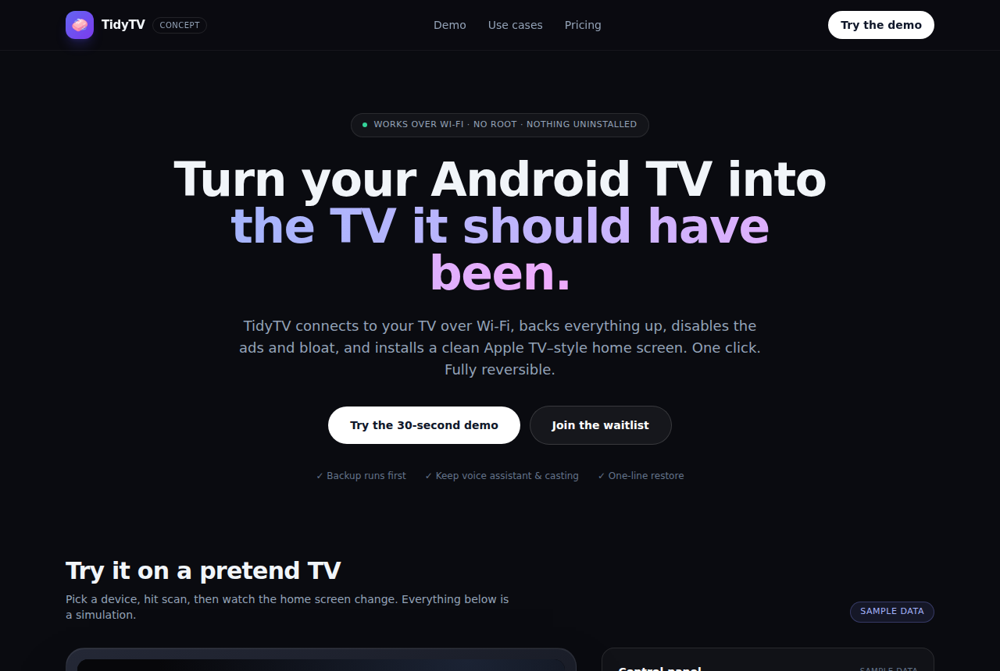

一键把安卓电视刷成 Apple TV 风
Gathin23/cleanyourtv · 效率工具NOASSERTION⭐ 45,401

Gathin23/cleanyourtv 是一个用 Wi-Fi 给 Android TV / Google TV 去臃肿的开源项目。原理不复杂：电视打开 USB 调试后，电脑通过 ADB 连上去，先备份已装应用列表，再用 pm disable-user 把厂商的广告服务、遥测和预装垃圾禁用（不是卸载，随时能一键还原），最后装一个轻量第三方启动器设为默认桌面，得到接近 Apple TV 的干净首页。不用 root、不用插线，README 里还提供了一个给 AI 编码助手用的提示词，让它自动识别你的电视型号和可清理项。它最近火起来，一是演示效果直观——清理前后对比截图传播力很强，二是正撞上大家对智能电视广告和卡顿的长期不满，三是 Product Hunt 和官网已经铺好，社区还做了一个只用安卓手机的配套 App。产品化机会在「把这三步做成 Mac/Windows 双击即用的桌面 App」：自动发现同一 Wi-Fi 下的电视、扫描可清理项、备份、清理、装启动器，全程图形化。难点是各品牌电视的开发者选项路径和包名都不一样，支持成本高；而且项目自己已经有官网和发布渠道，单纯套壳包装的空间不大，更适合做跨品牌适配层或面向家庭用户的托管式服务。
今日 Top 5
| # | 项目 | 传播 | 创业 | 综合 |
|---|---|---|---|---|
| 1 | Gathin23/cleanyourtv | 8.33 | 6.2 | 7.53 |
| 2 | tangency-labs/solidcraft | 7.33 | 7.15 | 7.43 |
| 3 | storytold/gridcraft | 8.0 | 6.6 | 7.31 |
| 4 | storytold/effectcraft | 7.67 | 6.15 | 7.02 |
| 5 | hugohe3/ppt-master | 8.0 | 7.45 | 7.0 |